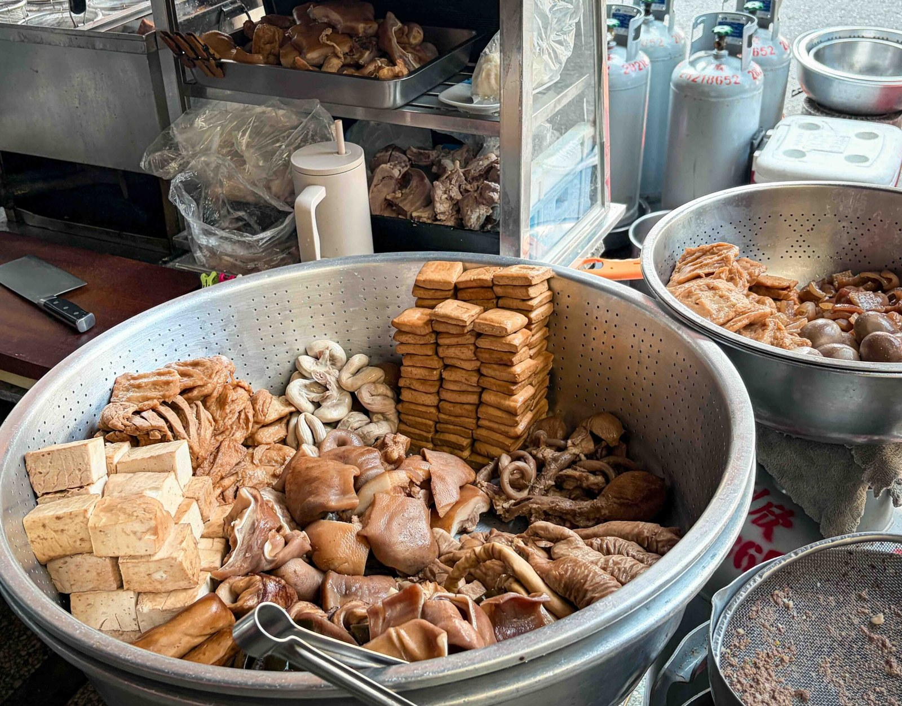

Nash｜麗華古早味麵攤：石牌裕民商圈早午餐，滷味、乾麵與餛飩湯口袋名單
來源是 Nash，神之領域 2026-07-24 食記〈【石牌美食】麗華古早味麵攤｜北投在地人最愛的早午餐，超強滷味搭配乾麵餛飩必點〉。這篇適合收進「生活雷達／台北美食／石牌站」：重點不是華麗裝潢，而是石牌裕民商圈騎樓麵攤的早午餐節奏、滷味檯與乾麵餛飩組合。

一句話摘要
麗華古早味麵攤是石牌站附近可收藏的傳統早午餐：早上開賣、主打乾麵／湯麵／餛飩與大盆滷味，尤其適合想吃古早味滷味拼盤、麻醬麵、肉燥乾麵或餛飩湯的人；營業時間與地址資料在不同食記間略有差異，出發前建議用 Google Maps 或外送平台再次確認。
店家資訊
- 店名：麗華古早味麵攤 / 麗華古早麵 / 石牌夜市麗華古早麵店
- 區域：台北市北投區，石牌站、裕民商圈
- Nash 文中地址：台北市北投區裕民三路
- 多篇食記補充地址：台北市北投區裕民二路 20 號，位於裕民三路／裕民二路交叉口一帶、騎樓下
- 交通：捷運石牌站步行約 3–5 分鐘
- 營業時間：Nash 與多篇食記標示約 06:00–14:30，週二公休；也有食記寫 06:00–13:00 或 06:30–14:30，售完為止
- 電話：多數公開食記未列或標示無電話，較適合現場排隊／外送平台查詢
文章重點整理
Nash 食記指出，這家店位於北投裕民商圈、距離石牌捷運站不遠，攤位在騎樓下，座位多是傳統鐵桌板凳。早上六點開始營業，對附近居民來說是上班上課前的早餐／早午餐補給站。
餐點結構是典型古早味麵攤：乾麵、湯麵、米粉、意麵、餛飩，再搭配門口一大盆滷味。Nash 特別強調滷味種類很多，包含豆干、海帶、百頁豆腐、油豆腐、豬耳朵、豬皮、豬心、豬肺、豬肚、粉腸、肥腸等，適合喜歡內臟滷味的人。
必懂點法 / 必點方向
- 滷味拼盤：這家最值得記的核心。可依喜好挑豆干、豬皮、豬耳、甜不辣、粉腸、豬心、豬肺、軟管等，搭薑絲與特調辣醬。
- 麻醬麵：芝麻醬香氣濃，搭少許肉燥與青菜；適合想吃濃郁乾麵的人。
- 肉燥乾麵：油蔥與肉燥香明顯，搭豆芽與青菜，走傳統鹹香路線。
- 乾拌餛飩：比湯餛飩更集中醬香，醬油膏與油蔥酥會把肉餡味道拉出來。
- 餛飩湯：湯頭清爽但有大骨甜味，適合早上或搭乾麵平衡油香。
來源與查核
Nash 原文列出店名、地址「台北市北投區裕民三路」與營業時間 06:00–14:30（週二公休）。Brave 搜尋交叉比對到多個外部來源：
- 化為六月息食記標示地址為台北市北投區裕民三路 29 號騎樓下，石牌站 2 號出口步行約 3 分鐘，營業 06:00–14:30，週二公休。
- 布雷克的出走旅行視界標示地址為台北市北投區裕民二路 20 號，並說明位於裕民三路與裕民二路交叉口，石牌站步行約 5 分鐘，營業 06:00–14:30，週二公休。
- 冰淇淋貓食記同樣描述北投裕民二路、石牌站步行約 5 分鐘、每天早上六點開攤到下午兩點多，主打滷味拼盤與麵食。
- Uber Eats 搜尋結果顯示「石牌夜市 麗華古早麵店」評價約 4.82，熱門組合包含乾意麵及餛飩湯、嘴邊肉、滷豬皮、油豆腐等，可佐證其外送平台分類與餐點方向。
因此，地址可理解為「裕民二路 20 號／裕民三路交叉口騎樓一帶」。若要精準導航，建議直接搜尋「麗華古早味麵攤」或「石牌夜市 麗華古早麵店」，不要只輸入裕民三路。
實用建議
- 最適合時段：早餐到早午餐。若不想撲空，建議避開快收攤時段，熱門滷味可能提早賣完。
- 適合對象：喜歡傳統麵攤、古早味滷味、內臟小菜、餛飩湯的人。
- 點餐策略：第一次可用「一碗乾麵或麻醬麵 + 餛飩湯 + 滷味拼盤」建立基本體驗。
- 注意事項：騎樓小吃攤環境，非精緻餐廳；尖峰時段可能排隊或併桌。
- 價格、營業時間、店休日與外送品項都具波動性，以現場或平台當下顯示為準。
圖片描述 / OCR
主圖是麗華古早味麵攤滷味檯：前景是一個大型金屬瀝盆，裡面堆滿豆干、豆皮、滷蛋、豬耳、豬皮、粉腸與多種內臟小菜；右側另有一盆滷味，背景可見瓦斯桶、鍋具與傳統攤位工作區。圖片沒有明顯可讀文字，重點是呈現「滷味種類多、份量大、傳統麵攤」的視覺證據。
收進生活雷達的理由
石牌站周邊一直是欒帥可用的台北生活動線資料。這篇筆記提供一個明確場景：早上到中午、石牌站步行可達、想吃古早味麵攤與滷味時可以快速查到「店在哪、何時去、點什麼、注意什麼」。